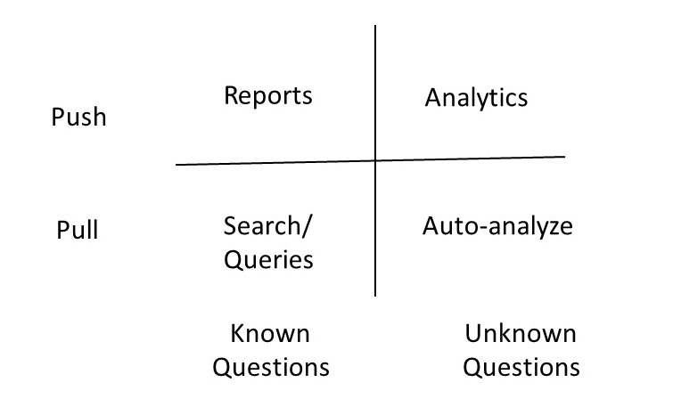
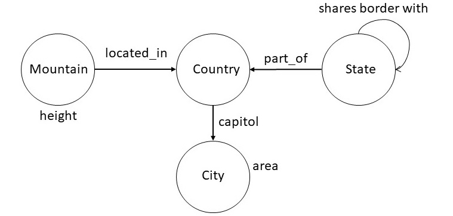

1. Introduction
In previous chapters, we discussed how to design a knowledge graph,
how to construct it using different methods, and how to perform
inference over it. In this chapter, we shift our focus to how users
interact with a knowledge graph. User interaction is closely connected
to schema design: a well-designed schema is intended to be
understandable not only by machines, but also by people. One of the
key advantages of knowledge graphs is that the same conceptual model
of a domain, captured in the schema, also serves as the foundation for
the graph's implementation.
For example, in a knowledge graph about academic publications, the
schema may include concepts such as Paper, Author, and Venue, along
with relationships like writes and publishedIn. Because these concepts
closely reflect how users naturally think about the domain, a user can
explore the knowledge graph by asking questions such as "Which papers
did this author write?" or "Where was this paper published?" without
needing to understand how the data is physically stored.
In this chapter, we examine common interaction techniques that
become possible once a knowledge graph schema has been populated with
instances.
2. Modes of Interaction with a Knowledge Graph
The primary purpose of a knowledge graph is to help answer users'
questions. Some of these questions are known in advance, for example,
standard queries that support reports or dashboards, while others may
emerge only after users begin exploring the data or when the system
itself reveals unexpected patterns.
User interaction with a knowledge graph can take different
forms. In some cases, interaction happens in real time, such as when a
user submits a query and immediately receives results. In other cases,
interaction occurs through batch processes, where the knowledge graph
is analyzed offline to generate reports, summaries, or analytics for
later use.
Together, these considerations lead to four broad modes of
interaction, which can be organized along two dimensions: whether the
interaction is initiated by the user (a pull model) or initiated by
the system in response to available information (a push model), and
whether the questions being answered are known in advance or emerge
dynamically. In the following sections, we examine each of these
interaction modes in more detail.

Figure 1: Different Modes for Interacting with a Knowledge Graph
Knowledge graph interaction modes are typically supported through a
combination of search, query answering, and graphical interfaces. For
example, in an academic publications knowledge graph, a user might
look for information about authors, papers, or venues. A search
interface resembles a search engine, allowing users to type keywords
such as an author's name or a paper title to quickly locate relevant
entities or facts. Query interfaces enable more precise questions, for
instance, a user could ask, "Which papers did Dr. Smith publish in
2024?", using either a formal query language or a natural language
interface. Graphical interfaces allow users to visualize
relationships, compose queries by connecting entities, and explore the
network of papers, authors, and venues interactively.
In practice, knowledge graph systems often combine these interface
types to support diverse user needs. For example, a query about an
author's publications might be composed using both keyword search
and a structured query builder, with the results displayed as a graph
showing authors linked to their papers, alongside a textual list of
publication details. In this section, we examine three key interface
types in detail -- graphical visualization, structured query
interfaces, and natural language queries -- focusing on how they help
users explore and retrieve knowledge effectively. Formal query
languages such as SPARQL and Cypher have been covered in previous
chapters, so our focus here will be on their practical application in
user -- facing interfaces.
3. Visualization of a Knowledge Graph
It is common to see graphical visualizations of knowledge graphs
containing thousands of nodes and edges. For example, a knowledge
graph showing all publications, authors, and citations in a large
research domain might render every paper and author at once, creating
a dense "hairball" that is difficult to interpret. These
visualizations often serve merely as a backdrop, rather than actively
contributing to insights or helping users identify the most important
patterns. Simply working with a knowledge graph does not automatically
make a graphical representation the best way to interact with
it. Instead, we should rely on established principles of visualization
design and select the medium that most effectively conveys the
intended information.
In this section, we begin by summarizing key visualization
principles, and then outline several best practices for visualizing
knowledge graphs in ways that support meaningful user interaction.
3.1 General Principles for Visualization Design
The purpose of visualizing a knowledge graph is to create a representation that significantly amplifies the user's understanding of the data. Effective visualizations help users by:
- Presenting more information than they could remember at one time.
- Highlighting important pieces of information, reducing the need to search.
- Placing relevant data next to each other to facilitate comparisons.
- Guiding attention as users navigate the visualization.
- Providing an abstract view by selectively omitting or recoding information.
- Allowing interaction, which supports deeper engagement and exploration of the data.
For example, in an academic publications knowledge graph, visualization can help a researcher quickly see patterns such as which authors collaborate most frequently, which papers are most cited, and how research topics are connected -- all without having to manually parse hundreds of records.
A visualization is an adjustable mapping from the data to a visual
form for a human perceiver. A Knowledge graphs is powerful because
its schema can be visualized directly in the same form in which it
is stored as a data, i.e., without requiring any transformation. We
should not assume this approach to always carry over when we are
visualizing the data stored in the knowledge graph, because, the
stored data size is much larger than the size of the schema. We, therefore,
need to explicitly undertake a design of visual structures for best
presenting knowledge graph data.
Designing a visual structure involves encoding information in several ways:
- Spatial substrate: Determining how elements are positioned. For instance, nodes representing authors might be arranged to minimize edge crossings, or papers could be grouped by topic.
- Marks: Visible elements such as points, lines, or areas that represent data values. In our example, nodes for papers might be circles, with the size representing citation count.
- Connections: Lines or edges that show relationships. Hierarchical or tree structures can be used for nested data, such as grouping papers under their respective authors.
- Enclosure: Shapes or borders that group related elements, like enclosing all papers from the same research lab.
- Retinal properties: Color, hue, saturation, transparency, or shape to highlight attributes. For example, papers could be colored by research area.
- Temporal encoding: Animation or time-based representation can show changes over time, such as the growth of citations for a particular paper or author network.
Visualizations can be grouped into four categories:
- Simple: Displays up to three variables, which is generally
considered the limit for easy human comprehension. For instance, a
scatter plot of papers by publication year, citation count, and
topic area.
- Composed: Combines multiple simple visualizations to show
additional variables, such as a scatter plot alongside a bar chart
of author collaborations.
- Interactive: Lets users explore and navigate the data. In our
academic knowledge graph example, a user could click on an author
node to expand connected papers or see co-authors.
- Attentive/Reactive: Responds to user actions and may anticipate
useful information. For example, when a researcher selects a highly
cited paper, the system could highlight related papers or emerging
topics automatically.
By following these principles, knowledge graph visualizations can
transform complex data into insights that are understandable,
actionable, and engaging for users.
3.2 Best Practices for Knowledge Graph Visualization
In the previous section, we reviewed principles for designing effective visualizations and emphasized that showing all data in a cluttered graph is rarely the best approach. In this section, we outline a step-by-step approach for designing knowledge graph visualizations that leverage these principles.
The design process can include the following steps:
- Determine which variables to encode in the spatial layout. For
example, in an academic publications knowledge graph, nodes
representing authors could be positioned to minimize edge crossings,
while papers could be grouped by research area.
- Combine multiple spatial encodings to increase dimensionality,
allowing different relationships or attributes to be represented
simultaneously.
- Use retinal properties, such as color, size, or shape, to add
additional dimensions of information. For instance, node size could
indicate citation count, and color could indicate research
area.
- Add interactive controls to allow selective exploration,
filtering, and zooming, so users can navigate the graph without
being overwhelmed.
- Incorporate attentive-reactive features, where the system
highlights relevant nodes or suggests related data elements based on
the user&s focus.
A practical visualization could include several key features. First,
an aggregated overview presents a summary of the data to help users
orient themselves. Users can then zoom into specific areas or pose
queries to focus on subsets of interest. While exploring a segment of
the knowledge graph, users can request details on individual nodes or
relationships. Finally, attentive-reactive features can proactively
suggest important papers, authors, or emerging topics, helping users
discover relevant information without needing to search exhaustively.
4. Structured Query Interfaces
A structured query interface (SQI) is an important way for users to interact with a knowledge graph. In such an interface, users start typing expressions, and the system suggests completions that can be mapped into an underlying query language, such as Cypher or SPARQL.
To illustrate, consider the following snippet of a knowledge graph schema from Wikidata:

Figure 2: A snippet of the Wikidata Schema
Based on this schema, users can pose queries such as:
- city with largest area
- top five cities by area
- countries whose capitals have area at least 500 square kilometers
- states bordering Oregon and Washington
- second tallest mountain in France
- country with the most number of rivers
One way to specify a structured query interface is to specify rules
of grammar in the Backus Naur Form (BNF). The rules shown below
illustrate this approach for the set of examples considered above.
| <np> ::= <noun> "and" <noun> |
| <np> ::= <geographical-region> | |
| <geographical-region> <spatial-relation> <geographical-region> |
| <geographical-region> ::= "capital of country" | "city" | "country" | |
|
"mountain" | "river" | "state" |
| <property> ::= "area" | "height" |
| <aggregate-relator> ::= "with the most number of" | "with largest" |"with" |
| <aggregate-modifier> ::= "top" <number> | "second tallest" |
| <spatial-relation> ::= "bordering" | "inside" |
| <number-constaint> ::= "atleast" <quantity> |
| <quantity> ::= <number> <unit> |
| <unit> ::= "Square Kilometer" |
| <ranking> ::= "by" |
We can reduce the queries above to expressions that conform to this
grammar. For example, the first query, "city with the largest
area", conforms to the following expression:
| <geographical-region> <aggregate-relator> <property> |
Next consider the query "top five cities by area". The following
expression that captures this query is equivalent to "top five city
by area". For our structured query interface to be faithful to
original English, we will need to incoporate the lexical knowledge
about plurals.
| <aggregate-modifier> <geographical-region> <ranking> <property> |
Finally, we show below the expression for the third query:
"countries whose capitals have area at least 500 squared
kilometers". The expression show below has the following version in
English: "country with capital with area at least 500 squared
kilometers". In addition to the incorrect pluralization, it uses
different words, for example, "with" instead of "whose", and "with"
instead of "have". Most reasonable speakers of English would consider
both the queries to be equivalent. This example highlights the
tradeoffs in designing structured query interfaces: they may not be
faithful to all the different ways of posing the query in English, but
they can handle a large number of practical useful cases. For
example, the above grammar will correctly handle the query "state with
largest area", and a numerous other variations.
| <geographical-region> <aggregate-relator> <geographical-region> |
| <aggregate-relator> <property> <number-constraint> <quantity> |
Once we have developed a BNF grammar for a structured query
interface that specifies the range of queries of interest, it is
straightforward to check whether an input query is legal, and also
to generate a set of legal queries which could be suggested to the
user proactively to autocomplete what they have already typed. We
show below a logic programming translation of the above BNF
grammar.
| np(X) :- np(Y) & np(Z) & append(X,Y,Z) |
| np(X) :- geographical_region(X) |
| np(A) :- geographical_region(X) & spatial_relation(Y) & geographical_region(Z) & append(A,X,Y,Z) |
| geographical_region(capital) |
| geographical_region(city) |
| geographical_region(country) |
| geographical_region(mountain) |
| geographical_region(river) |
| geographical_region(state) |
| property(area) |
| property(height) |
| aggregate_relator(with_the_most_number_of) |
| aggregate_relator(with_largest) |
| aggregate_relator(with) |
| aggregate_modifier(second_tallest) |
| aggregate_modifier(X) :- number(N) & append(X,top,N) |
| spatial_relation(bordering) |
| aggregate_relation(insider) |
| number_constraint(X) :- quantity(Q) & append(X,atleast,Q) |
| quantity(Q) :- number(N) & unit(U) & append(Q,N,U) |
| unit(square_kilomters) |
| ranking(by) |
Improvements in structured queries accepted by the system require
improving the grammar. This approach can be very cost-effective for
situations where the entities of interest and their desired
relationships can be easily captured in a grammar. In the next
section, we consider approaches that aim to accept queries in English,
and try to overcome the problem of required engineering of the grammar
through a machine learning approach.
5. Natural Language Query Interfaces
A possible approach to go beyond the structured queries, and to get
around the problem of massive engineering of the grammar, is to use a
semantic parsing framework. In this framework, we begin with a
minimal grammar and use it with a natural
language parser that is trained to
choose the most likely interpretation of a question. A semantic
parsing system for understanding natural language questions has five
components: executor, grammar, model, parser and learner. We briefly
describe each of these components and then illustrate them using
examples.
Unlike traditional natural language parsers that produce a parse
tree, a semantic parsing system produces a representation that can
be directly executed on a suitable platform. For example, it could
produce a SPARQL or a Cypher query. The engine that evaluates the
resulting query then becomes the executor for the semantic parsing
system.
The grammar in a semantic parsing system specifies a set of rules
for processing the input sentences. It connects utterances to
possible derivations of logical forms. Formally, a grammar is set of
rules of the form α ⇒ β. We show below a snippet
of a grammar used by a semantic parsing system.
| NP(x) with the largest RelNP(r) ⇒ argmax(1,1,x,r) |
| top NP(n) NP(X) by the RelNP(r) ⇒ argmax(1,n,x,r) |
| NP(x) has RelNP(r) at least NP(n) ⇒ (< arg(x,r) n) |
The first rule in the above grammar can be used to process "city
with the largest area". The right-hand side of each rule specifies an
executable form. For the first rule, argmax(m,n,x,r) is a
relation that consists of a ranked list of x (ranked
between m and n) such that the ranking is defined on
the r values of x. Similarly, the third rule handles the
query "countries whose capital has area at least 15000 square
kilomter". In the right hand side of the rule,
(< arg(x,r), n) specifies the computation to determine those x such that their
r value is less than n.
Given an input question, the application of grammar may result in
multiple alternative interpretations. A model defines a probability
distribution over those interpretations to specify which of them is
most likely. A common approach is to use the log-linear machine
learning model that takes as input the features of each
interpretation. We define the features of
an interpretation by maintaining a vector in which each position is
a count of how many times a particular rule of the grammar was
applied in arriving at that interpretation. The model also contains
another vector that specifies the weight of each feature for
capturing the importance of each feature. One goal of the learning
then is to determine an optimal weight vector.
Given a trained model, and an input, the parser computes its high
probability interpretation. Assuming that the utterance is given as a
sequence of tokens, the parser (usually a chart parser), recrusively
builds interpretations for each span of text. As the total number of
interpretations can be exponential, we typically limit the number of
interpretations at each step to a pre-specified number (e.g., 20). As a
result, the final interpretation is not guaranteed to be optimal, but it
very often turns out to be an effective heuristic.
The learner computes the parameters of the model, and in some
cases, additions to the grammar, by processing the training
examples. The learner optimizes the parameters to maximize the
likelihood of observing the examples in the training data. Even
though we may have the training data, but we do not typically have
the correct interpretation for each instance in the data. Therefore, the
training process will consider any interpretation that can reproduce an
instance in the training data to be correct. We typically use a
stochastic gradient descent to optimize the model.
The components of a semantic parsing system are relatively loosely
coupled. The executor is concerned purely with what we want to express
independent of how it would be expressed in natural language. The
grammar describes how candidate logical forms are constructed from the
utterance but does not provide algorithmic guidance nor specifies a way
to score the candidates. The model focuses on a interpretation
and defines features that could be helpful for predicting
accurately. The parser and the learner provide algorithms largely
independent of semantic representations. This modularity allows us to
improve each component in isolation.
Understanding natural language queries accurately is an extremely difficult
problem. Most semantic parsing systems report an accuracy in the
range of 50-60%. Improving the performance further requires
amassing training data or engineering the grammar. Overall success
of the system depends on the tight scope of the desired set of
queries and availability of training data and computation power.
6. Summary
In this chapter, we explored the various ways end-users can interact
with knowledge graphs. The key takeaway is that simply displaying many
nodes and edges on a screen is rarely the most effective
approach. Graphical views can be useful for understanding the schema,
which is typically small and structured, but they are often less
effective for exploring instance-level data.
Designing an effective interface requires considering the business
problem, the type of data, and the resources available for interface
development. In practice, the best interfaces often combine multiple
interaction methods: search for quickly locating information,
structured queries for precise data retrieval, and natural language
question answering for limited, targeted use cases. For example, a
user might start with a search to find a city, refine results with a
structured query, and then ask a natural language question to compare
specific properties across cities.
By thoughtfully combining these approaches, we can design knowledge
graph interfaces that are both usable and informative, supporting
real-world decision-making rather than just visual exploration.
7. Further Reading
The discussion on visualization design in this chapter draws on the
work of Stu Card, which provides many detailed examples and
illustrations of effective visualization
principles [Card
2008]. For readers interested in structured queries, these can be
seen as a subset of controlled natural languages, which have also been
used for knowledge capture. Our examples in this chapter focus on
controlled language solely for querying purposes. A good starting
point for a more extensive discussion is Kowalski's position
paper
[Kowalski 2020].
Natural language query interfaces have been explored extensively
through semantic parsing. Percy Liang's work demonstrates how a
semantic parser can map user questions into formal queries over a
knowledge
graph [Liang
2016]. This approach allows precise translation of natural
language into SPARQL or Cypher queries while handling variations in
phrasing.
Much recent research leverages large language models (LLMs) to
generate queries over knowledge graphs. For example, given a question
like "Which countries have capitals with an area greater than 500
km2?", an LLM can be prompted with the schema and example queries to
produce the equivalent SPARQL query. Accuracy improves significantly
when the model has access to schema
information [Allemang
& Sequeda 2024]. Due to the unpredictable performance of
current LLMs, a common strategy is to have the model map input
questions to a set of predefined query templates in SPARQL or Cypher,
combining natural language understanding with precise, tested query
structures.
Graphistry is a
commercial company focused on the visual aspects of leveraging
knowledge graphs. Their work illustrates how high-quality
visualizations can help users explore complex relationships, uncover
insights, and make sense of large-scale knowledge graph data,
highlighting the value of visualization in a comprehensive knowledge
graph offering.
[Card
2008] Card, S. K. (2008). Information visualization. In
J. A. Jacko & A. Sears (Eds.), The Human Computer Interaction
Handbook: Fundamentals, Evolving Technologies and Emerging
Applications (pp. 509-543). Lawrence Erlbaum Associates.
[Kowalski
2020] Kowalski, R. (2020). Logical English. Position paper
prepared for Logic and Practice of Programming (LPOP) 2020.
[Liang
2016] Liang, P. (2016). Learning executable semantic parsers for
natural language understanding. Communications of the ACM, 59(9),
68-76. https://doi.org/10.1145/2866568
[Allemang & Sequeda
2024] Allemang, D. & Sequeda, J. F. (2024). Increasing the LLM
Accuracy for Question Answering: Ontologies to the Rescue! arXiv
preprint arXiv:2405.11706. https://arxiv.org/abs/2405.11706
Exercises
Exercise 7.1.
How does visualization amplify the user understanding of a knowledge graph?
|
(a) |
By presenting impressive graphs |
|
(b) |
By using beautiful colors |
|
(c) |
By presenting a more abstract view of a situation by omission and recoding of information |
|
(d) |
By using optimal graph layout algorithms |
|
(e) |
By leveraging machine learning to better understand a user |
Exercise 7.2.
Which of the following is not a step in the process of designing a visual structure?
|
(a) |
Choice of retinal properties |
|
(b) |
Identifying and presenting time varying information |
|
(c) |
Fine tune the features for machine learning |
|
(d) |
Choosing a spatial substrate |
|
(e) |
Choosing suitable axes and coordinates |
Exercise 7.3.
What is an attentive reactive visualization?
|
(a) |
It is a simple visualization in which we show upto three different pieces of information. |
|
(b) |
It is a visualization in which we combine one or more simple visualizations with the goal of capturing more variables in the same display. |
|
(c) |
It is a visualization in which the response of the interface depends on how a user interacts with it. |
|
(d) |
It is a visualization in which the user can selectively explore, expand and navigate information. |
|
(e) |
It is a visualization that uses heptic devices. |
Exercise 7.4.
Which of the following queries does not follow from the BNF grammar considered in Section 3?
|
(a) |
capitol of country with second tallest mountain |
|
(b) |
mountain bordering river |
|
(c) |
city inside mountain with the most number of river |
|
(d) |
top 100 cities by Square Kilometer |
|
(e) |
country with the most number of state |
Exercise 7.5.
Which of the following statements is false?
|
(a) |
Given an input English sentence, it often leads to multiple alternative interpretations. |
|
(b) |
Semantic parser can be trained to choose the interpretation that has the highest probability of being correct. |
|
(c) |
The machine learner of a semantic QA system is capable of learning arbitrary extensions to the grammar. |
|
(d) |
A semantic parsing system requires a manually engineered grammar. |
|
(e) |
We still require a large number of training examples to get a good performance on a semantic parsing system. |
Exercise 7.6. In this exercise, your goal is to design a
user interface for the company knowledge graph you have been building
in the previous chapters. Choose one of the use case scenarios below
and apply the principles and techniques discussed in this chapter,
including visualization, structured queries, and natural language
interfaces. Your interface should leverage the queries and inferences
you have developed so far, and you should be able to demonstrate how a
user can explore the knowledge graph effectively.
- Company Insight: Create a 360-degree view of a
company that combines information from multiple sources. Using data
from Wikidata, SEC filings, or other public sources, design an
interface that presents an integrated view of the company. The
interface should allow users to search, query, and visualize the
information. Consider adding filters, dashboards, or summaries to
help users quickly grasp key insights.
Example task: Allow a user to find the top five companies with the highest revenue in the last fiscal year, and visualize how their subsidiaries are connected across different regions.
- Causal Graph: Explore headwinds and tailwinds
that might affect a company's performance. Design an interface
that visualizes causal relationships, incorporating inferences such
as shortest paths, communities, and centrality measures derived from
your knowledge graph. Users should be able to navigate, query, and
visualize these relationships to understand potential drivers of
company performance.
Example task: Allow a user to identify which market events are most likely to influence a company's stock performance and display the causal pathways connecting these events to financial outcomes.
Optional extensions: Include a short justification for
your design choices, highlighting how your interface supports user
interaction with the knowledge graph. You may provide sketches,
screenshots, or a prototype built using tools such as Dash, Streamlit,
or Neo4j Browser.
Exercise 7.7. Design a user interface to integrate the textbook knowledge graph into an actual online textbook. Please refer to this online video as an example of an existing interface. This interface combines elements of search, visualization, and structured queries. Consider the following scenarios when designing your new interface:
- First-Time Learning: Assume the student is
approaching the textbook for the first time. They may not fully
understand all concepts and might have gaps in prior knowledge.
Example task: Allow the student to explore the knowledge graph to see prerequisite concepts, get definitions, and visualize relationships among new topics, helping them navigate the material more effectively.
- Exam Revision: Assume a student is preparing
for an exam. The interface should help them review key concepts,
test their knowledge, and build confidence.
Example task: Provide a tool that lets the student answer practice questions generated from the knowledge graph, highlight relevant sections in the textbook, and visualize connections between concepts.
Optional extensions: Include a short rationale for your design decisions, showing how your interface supports effective learning. You may provide mockups, annotated screenshots, or a working prototype using tools such as Jupyter Book, Streamlit, or web frameworks.
|
 CS520
CS520